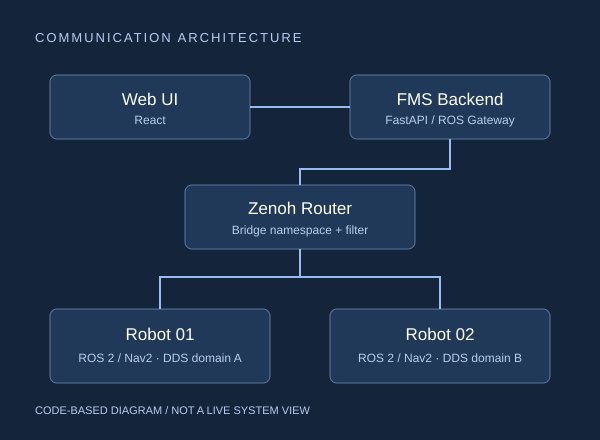

← 전체 프로젝트
Route Graph · 저장소 GeoJSON에서 재구성 통신 구성도 · 코드와 디버깅 기록 기준
01 / MULTI-ROBOT / FMS
AX Logistics MultiBot
진행 중여러 로봇의 상태와 명령을 연결하는 ROS 2 기반 물류 관제 시스템.

PROJECT OVERVIEW
어떤 시스템인가요?
ROS 2 Jazzy·Nav2 로봇의 위치와 상태를 웹에서 확인하고 이동 명령을 전달하는 팀 프로젝트입니다. 현재는 통신과 관제 연동을 중심으로 구현하고 있습니다.
MY ROLEFMS ↔ ROS 2 통신 및 로봇 시스템 통합
MY IMPLEMENTATION
- Zenoh 텔레메트리 수신과 로봇 상태·목적지 데이터 연동
- Mock Robot / Mock Fleet 테스트 코드와 로봇별 실행 환경 구성
- ROS 2 도메인·Bridge namespace·필터 설정 및 통신 문제 추적
- 클라이언트 연결 확인·차단과 TurtleBot 연동
SYSTEM FLOW
데이터가 동작으로 이어지는 구조
- 01Web UI
- 02FMS / FastAPI
- 03Zenoh Bridge
- 04ROS 2 / Nav2
TEAM / EXTERNAL
Nav2·TurtleBot3·zenoh-bridge-ros2dds를 적용했습니다. 물류 시나리오와 맵, 다른 로봇 기능은 팀원들과 분담했습니다.
구현 코드 확인ENGINEERING NOTE
문제를 마주했을 때
문제와 판단
웹의 로봇 위치가 반복해서 튀는 현상이 발생했습니다. Zenoh 직접 모니터링으로 DB 이전의 데이터 유입을 확인했습니다. 자동 탐색을 제한하고 로봇별 DDS 도메인, Bridge namespace와 deny 필터를 정리했습니다.
결과와 남은 한계
통신 경로 분리와 설정 변경을 코드·디버깅 문서에 남겼습니다. 전체 물류 운영 시나리오는 계속 통합 중입니다.
자동 주문 배차·Edge/Node 점유·교통관리·Deadlock 처리·작업 스케줄링의 구현과 통합 검증은 남은 범위입니다. OMX 연동과 VLM 비교는 향후 계획입니다.